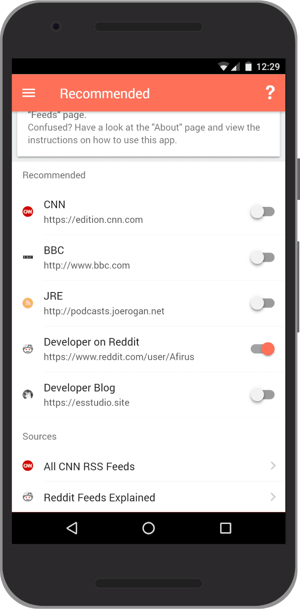
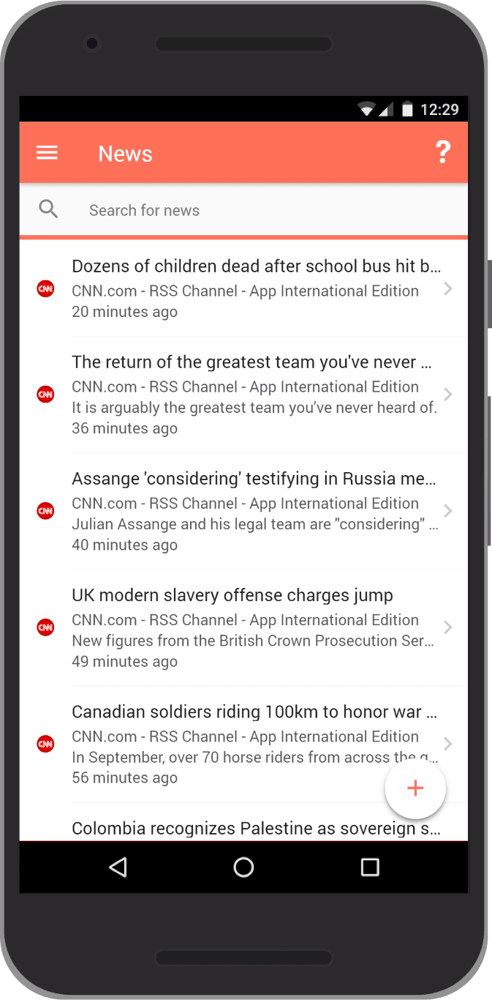
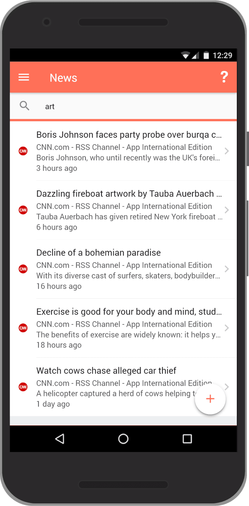
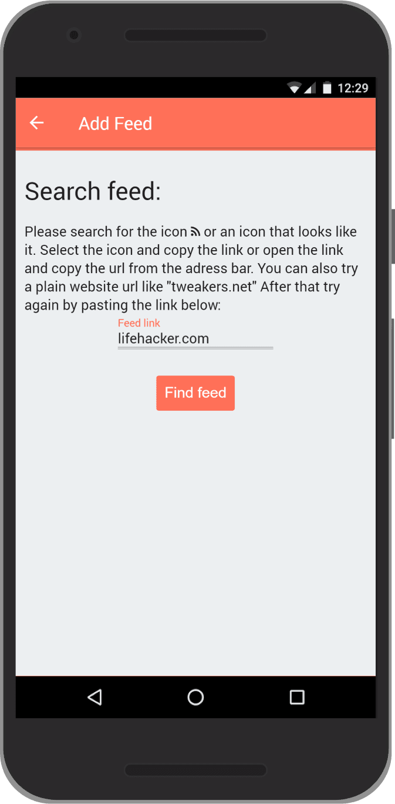

Contact the developer
More Apps
Send an Email
Privacy Policy
About
About
The easiest way to follow news from your favorite websites and blogs and news sites. Easily search for news on multiple platforms, find feeds on popular websites and more. Also works as a classic RSS/Atom reader.
This website will function as an app once you added it to your homescreen.
- Android: Menu icon ( ⋮ ) -> "Add to homescreen" button
- iPhone, iPad, & iPod Touch: Click the Share button on the browser’s toolbar (the rectangle with an arrow pointing upward). Then click the "Add to Home Screen" button.
- Edge: Menu icon ( ⋯ ) -> "Pin this page to Start" or "Pin this page to taskbar"
-
Chrome: open this url: "chrome://flags/#enable-desktop-pwas"

Menu icon ( ⋮ ) -> "Install to desktop"
Available on your browser and in the google play store.
Guide
When you first open the app, you will see the recommendations page. This page allows you to easily add and remove popular feeds.

If you're not already on the "Recommended" page, open the menu (by clicking the 3 bars in the upper left), and click on "Recommended".

You will now see the interface above. Which is a list of recommended feeds.

Let's add CNN.com.

Next, navigate to the "News" or "My Feeds" page. No posts from CNN.com have shown up yet because the page is still loading the CNN.com feed.

Wait for the progress bar right under the toolbar to complete.

The progress bar has completed and the CNN.com posts have shown up.

You can also use the search field to filter posts. It will search the name of the feed, for example CNN.com, to only show posts from CNN.com. It will also search in the posts title, description and content.

Let's try to find a custom feed on a website. Note that not all websites have these, and their might be a good chance the app will not be able to find one. If the app can't find a feed, you can always search google to find an RSS (or Atom) feed. As the app will also recognize these. For example the app cannot find a google news feed ("news.google.com"), but after a simple google search you will find that "news.google.com/rss" does work.

This could a few seconds depending on your network.

After the loading you will see the feed and it's posts. You can add it into your personal feed by clicking the "plus" button.

You will now see all of the posts, from the feed you have just added, in your "My Feeds" or "News" page.

You can view all of your subscribed feeds by navigating to the "Feeds" page. This will show not only the recommended feeds but also custom feeds that you had manually added.
Other